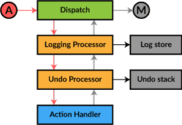

Action Processors

Sometimes you need to add a new aspect to action processing requiring access to all dispatched actions. Diode provides an extension mechanism to get in between dispatching an action and handling it. These action processors may do whatever they want with the incoming action, such as logging, modifying or cancelling them. The processors can also intercept the return value from the action handler to, for example, capture the modified model into an undo stack.
Usage
To define an action processor, create a class extending the ActionProcessor[M] trait and override the process function.
class LoggingProcessor[M] extends ActionProcessor[M] {
var log = Vector.empty[(Long, String)]
def process(dispatch: Dispatcher, action: AnyRef, next: (AnyRef) => ActionResult[M]): ActionResult[M] = {
// log the action
log = log :+ (new java.util.Date().getTime, action.toString)
// call the next processor
next(action)
}
}
Add it to the processing chain with addProcessor
val logProcessor = new LoggingProcessor[RootModel]
AppCircuit.addProcessor(logProcessor)
Later you can remove a processor if you don't need it anymore.
AppCircuit.removeProcessor(logProcessor)
Common Use Cases
TBW